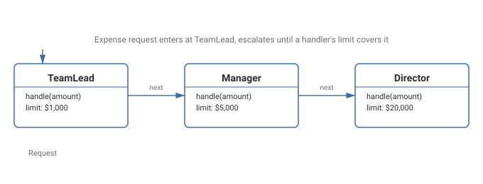

Chain of Responsibility Pattern
Passes a request along a chain of handlers, each deciding independently whether to process it or pass it further, so the sender never needs to know which handler ultimately acts on it.
Theory
The problem, in plain terms
You're building an expense approval system. A $200 expense can be approved by a team lead. A $3,000 expense needs a manager. A $15,000 expense needs a director. Anything above that needs the CEO. The naive approach is one method with nested if/else checking the amount and hard-coding who approves what — every time the approval hierarchy changes (a new "VP" level gets inserted, say), that method has to be edited, and it grows a new branch for every threshold.
Chain of Responsibility turns each approver into a link in a chain. Each handler decides for itself: "can I approve this, or does it need to go further up the chain?" If it can handle the request, it does and stops the chain. If not, it passes the request to the next handler. The code that submits the expense doesn't know or care how many approvers exist or what their thresholds are — it just hands the request to the first handler in the chain and lets the chain sort out where it ends up.
How it's built
A Handler interface (or abstract class) declares a handle(request) method and holds a reference to the next handler in the chain. Concrete handlers (TeamLead, Manager, Director) each implement handle() to check whether they can process the request; if they can, they do and return; if they can't, they call next.handle(request) to pass it along. Client code builds the chain once (wiring each handler's next reference) and only ever talks to the first handler.
Always give the chain an explicit terminal case for "nothing could handle this" — don't rely on the assumption that some handler always will.
Letting a request silently fall off the end of the chain with no terminal handling — it looks like the system "did nothing" with no error or log to explain why.
Where it bites you
If no handler in the chain can process a request, and nobody put a check for that at the end, the request can silently fall through without anyone acting on it — a chain needs an explicit terminal case ("no handler could process this") rather than assuming someone always will. Debugging can also get harder than a single method with visible branches, because tracing which handler ultimately processed a given request means stepping through however many handlers sit before it in the chain.
Diagram

When to Use
- More than one object might handle a request, and the right handler depends on runtime conditions.
- You want to add, remove, or reorder handlers without touching the code that submits requests.
- You don't want the sender of a request to know exactly which object will ultimately process it.
- There's a single, fixed handler for every request — a direct call is simpler.
- Every request must always be checked against every handler regardless of whether an earlier one handled it — that's closer to a broadcast than a chain that stops once handled.
What interviewers are actually listening for: naming concrete examples like middleware pipelines (Express.js, ASP.NET) and logging frameworks, showing this isn't just a textbook toy. Also, flagging the "silent fall-through" risk explicitly — a well-designed chain has a defined terminal behavior for unhandled requests rather than assuming one link always catches everything.
Real-World Examples
- Expense/purchase approval workflows — a request escalates through team lead, manager, director, and CEO until someone's authority level covers it.
- Web server middleware pipelines (Express.js, ASP.NET Core, Django middleware) — each middleware decides whether to handle the request, modify it, or pass it to the next one.
- Logging frameworks — a log record passes through handlers for different severity levels/destinations, each deciding whether it applies.
- Event bubbling in GUI frameworks — a click event travels up through nested UI components, each of which can handle it or let it continue bubbling.
- Exception handling chains — a try/catch hierarchy where each catch block decides whether it can handle a given exception type or re-throws it further up.
Interview Questions
Click a question to reveal the answer.
What is the core idea of Chain of Responsibility?
A request travels along a chain of handlers, each of which decides independently whether it can process the request or should pass it to the next handler. The sender only ever talks to the first handler and doesn't need to know which one ultimately processes the request.
What happens if no handler in the chain can process a request?
Nothing, unless the chain is explicitly designed with a terminal case — a well-built chain includes a final fallback (throwing an error, logging "unhandled", or a default handler) rather than silently letting the request fall off the end with no one having acted on it.
How is Chain of Responsibility different from a simple if/else chain?
An if/else chain is one block of code that has to be edited whenever handling logic changes, and it's aware of every branch at once. Chain of Responsibility distributes each condition into its own object, so handlers can be added, removed, or reordered by rewiring next references, without editing a shared block of logic or the code that submits requests.
How does middleware in web frameworks relate to this pattern?
Each middleware function is a handler: it can act on the request/response, and then explicitly calls next() to pass control to the following middleware, or short-circuits the chain by responding directly. That's Chain of Responsibility applied directly to HTTP request processing.
Code & Output
Same pattern, four languages. Every output shown here was captured from a real run — note each request escalates only as far as it needs to before a handler's limit covers it.